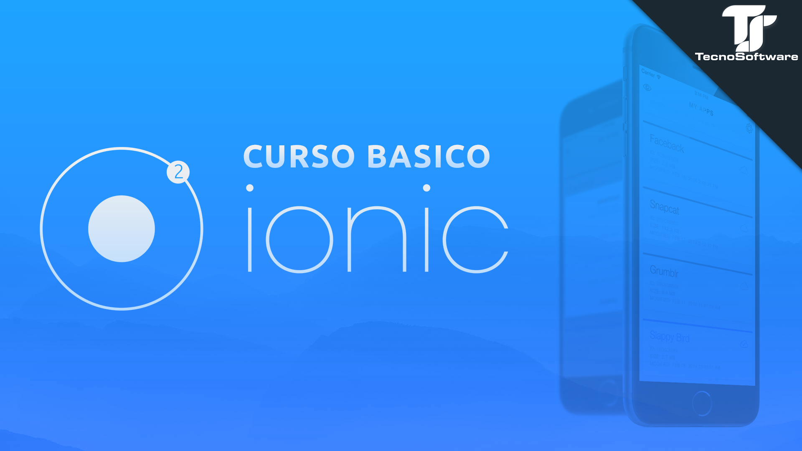

<ion-menu [content]='NAV'>
    <ion-content>
        
        <ion-list>

            <button color='light' ion-item *ngFor='let page of pages' (click)='getPages(page.component)' menuClose>
                <ion-icon item-left name='{{page.icon}}' ></ion-icon>
               {{page.titulo}}
            </button>

        </ion-list>
    </ion-content>
</ion-menu>


<ion-nav #NAV [root]="rootPage"></ion-nav>